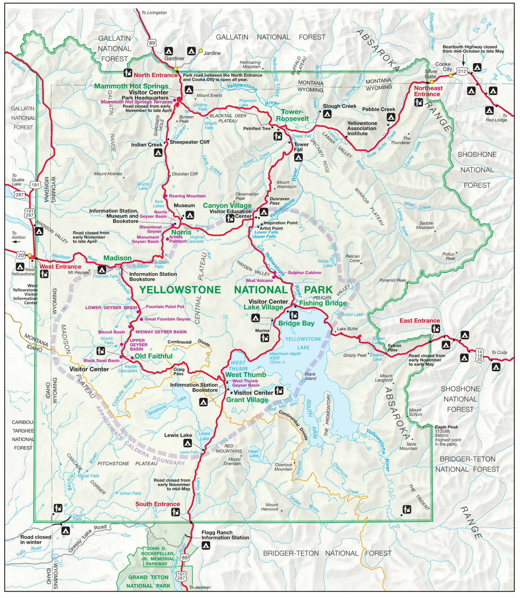
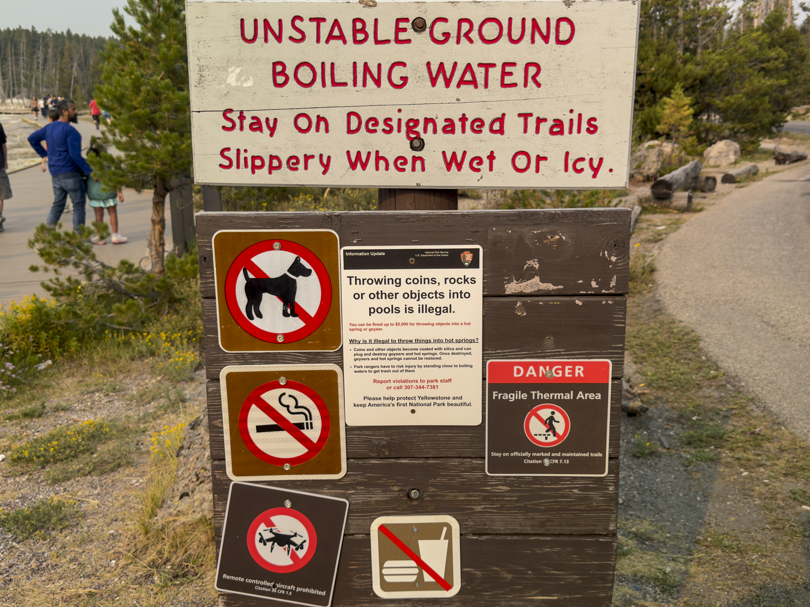

WARNING:
If you do want to see these sights in person and not through a gallery, do not enter this gallery.
The following gallery is a multi-paged collection of images (if the filesize didn't already give it away) of pictures of yellowstone's natural and geothermal features, its wildlife, and other interesting items, taken from August 4th through 8th by my family and I. The navigation bar will allow you to navigate through each page of this gallery and back to this main page.
About yellowstone:
The very first thing you should know about Yellowstone is that it is not a "supervolcano," in fact
that term is effectively meaningless.
What Yellowstone actually is, is a "caldera," a large
underground reservoir of mostly-solid magma, capable of producing "supereruptions."

The park itself is quite large and consists of two primary loops and five entrances.
Though it may
not seem like it, most parts of Yellowstone are quite a large distance from each other, and given the
fairly low speed limit of approximately 35mph (56 km/h), it's practically impossible to see everything
in a single day (hence a four day trip).

One of the multitude of signs encountered in this park
Signs are a very common thing in Yellowstone, and for a good reason. Dozens of people have lost their lives in the park.